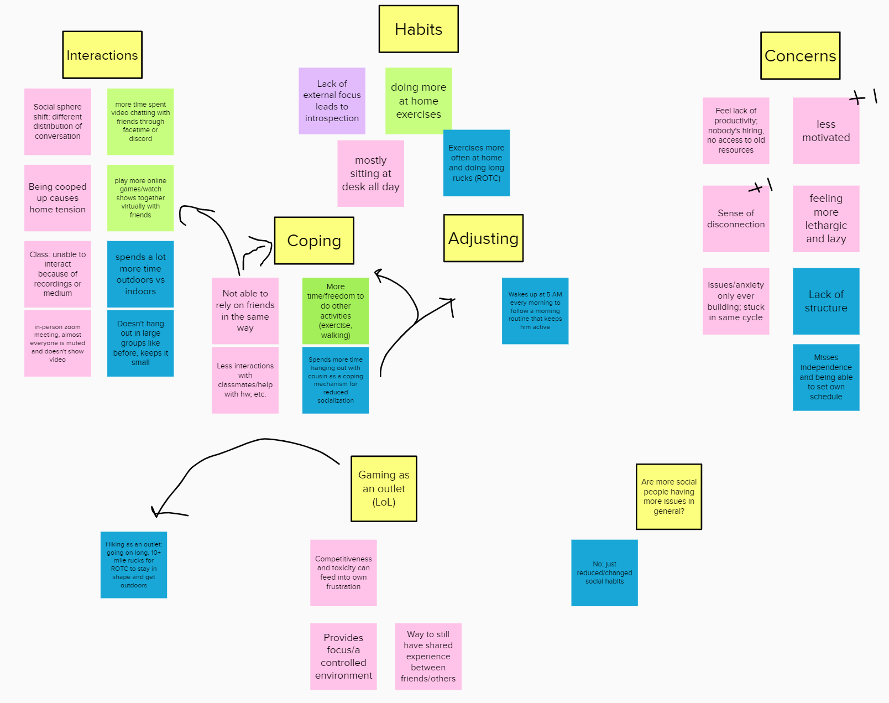
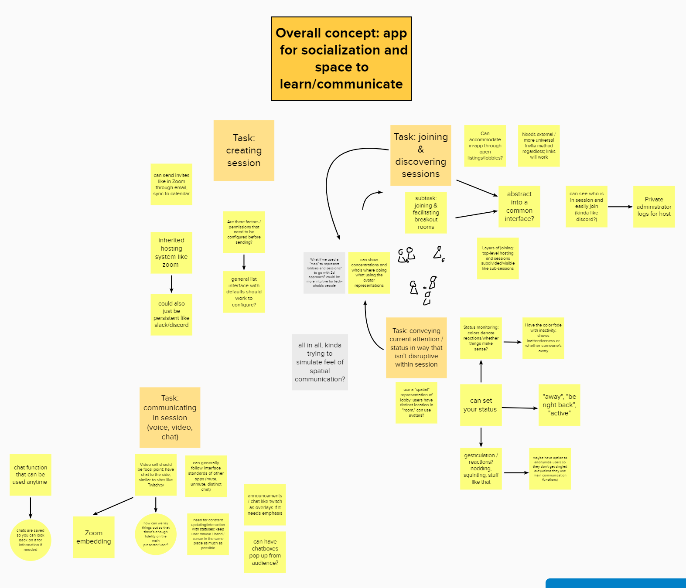
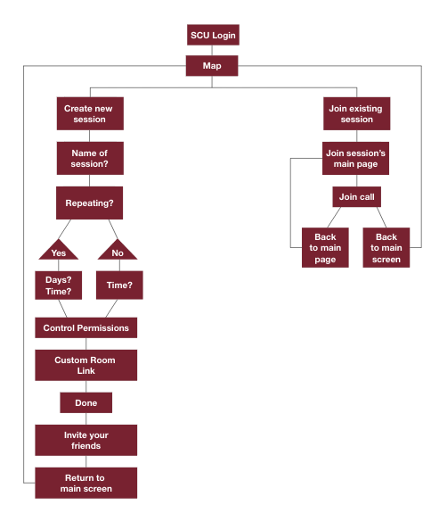
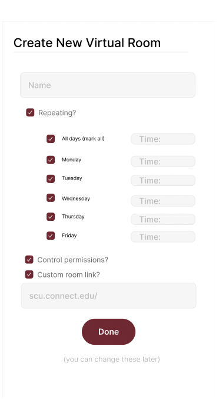
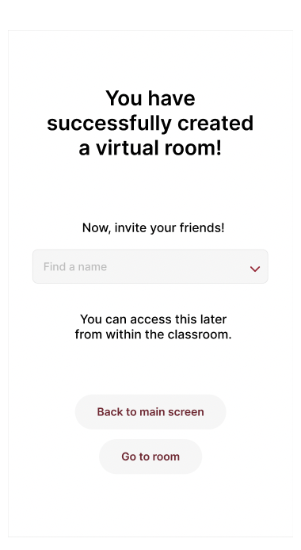
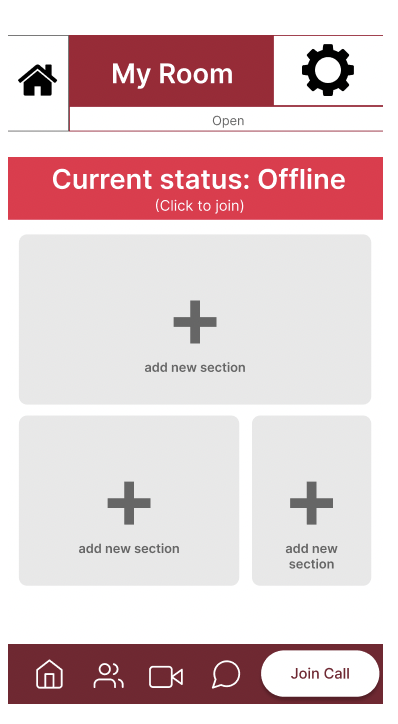

Online contexts are alienating for users unfamiliar with the setting. Because communication tends to be gated by specific mechanisms (text chats ,muting, webcam feeds, lack of physical feedback),most applications intended to connect students (as well as people in general) are unintuitive. This causes a fundamental disconnect among those who lack a full techno-social skillset.
SCU Connect is an app that centralizes all class resources to avoid digging through emails and Camino announcements for links, as well as creates an environment that promotes and instills a sense of socialization for the Santa Clara University community.
1 month
Figma
Our main goal in the interview process was to find the most common pain points experienced by Santa Clara University students and use their answers to come up with the best way to fix those problems. To conduct interviews, each team member interviewed one student outside of our class, recording the session and taking notes.
After completing the interviews, our team came together to discuss what we discovered and then each created a primary persona.
"Let me check my calendar and see what time works for me!"
- Junior computer science major
- From bay area
- Social butterfly on and off line, uses all kinds of different social medias to stay in touch with friends and family
- Cheerful, optimistic, social, tech savvy
- Just got into baking during pandemic
- Always running late
- Is comfortable chatting and using online platforms to talk with others online but misses the in person connections and college environment
- Wants to stay in touch with everyone
- Wants an easy way to communicate with professors
- Can learn to use new technologies quickly but sometimes gets irritated when the applications crash or the wifi causes poor connection errors
- Internship recently got cancelled so trying to find something to fill the time during summer
- Scheduled meetings with friends can be a headache when not on time and only have a limited time to talk
After coming back together to go over the personas, we began brainstorming ideas for our app that would appeal the most to all of them. We came up with three main tasks that users should be able to do with SCU Connect; creating a session, joining and discovering sessions, and communicating in session.
 After creating a flow of how we would go from one screen to another, I was in charge of fleshing out the details of the creating a session task.
Goals/Outcome |
Users will be able to create a meeting where they can video chat with their friends, classmates or peers during a specified time and day. Once they have finished creating a session, they will have a link to that video call that they can use and share with others to access the session during the set time. |
Inputs |
Users will need to fill out a form with the basic information about the meeting they are creating; the name of the meeting, the time of the meeting and if it is a repeating event. |
Assumptions |
We are assuming that the users are students looking to create a virtual room for a study group, club meeting or general virtual hangout with their friends. |
Steps |
1. The user will input the name of the meeting 2. If the meeting is repeating, the user will click the routine checkbox and enter the days and times of the meeting 3. If the user wants to control permissions, they will click that checkbox 4. The user can customize the room link, if needed 5. Once they have completed all the above steps, the user will click the done button 6. The user will be sent to the "session was created succssfully" page |
Instructions for participant |
In this situation, we will be simulating a scenario where you (the test participant) wants to create a virtual session for your club's weekly meeting throughout the quarter. Please explain the steps you think you need to do in order to complete this task. |
Notes |
Have the test participant start on the home page. See how long it takes them to find the plus at the bottom of the screen and create a new virtual room. Once on the "create new virtual room" screen, have them explain each step they are doing, taking note of any confusion. Once they finished making the session and returned to the main screen, note if they notice that the new room they created appears on the screen and can tell the difference between rooms they are the admin of verses rooms they can just join. |
Using the main task chart, I created a low-fidelity sketch of what I thought the screens should look like. Once that was done, I presented my sketches to my group and we discussed the parts that we wanted to keep and ways we could improve the screens. After that, I used Figma to create the first iteration of the high-fidelity screens.
After completing the first iteration of high-fiedelity prototypes, my team and I tested our app on some of our other classmates. During the testing, we had one facilitator talking to the participant to explain the concept of the app, go over the tasks that the participant was going to do and answer any questions. The other two teammates were scribes.
After all the rounds of testing, we went over the notes and discussed how to update our app to incorporate the feedback we had received. We found that we needed to add a logo and application name to add information that allows the user to ask "what am I getting into?"". Contacts and rooms were not clearly separated, so we needed to make it clearer for the user to understand, as users tested were confused as to how contacts and schedules are separated. In addition, the target audience seemed too broad, so we switched to focus towards Santa Clara University students and faculty rather than any student or teacher.
For the final design, I updated the app's color scheme to make Santa Clara University's school colors. I also took the feedback from the testing and cleaned up the navigation bars at the top and bottom of the screens. Lastly, I simplified the session creation screens.
|
Creating a room:


|
Joining a room:

|
From this project, I learned how to communicate the design ideas during the ideation phase and how to translate those ideas into the design of the screens. Some things that I would improve on would be to simplify the design and clarify the purpose of the icons on the screens.